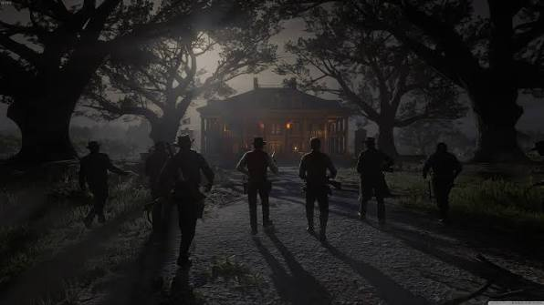

Hola Usuario
Imagen Red Dead Redemtion 2

Nombre De Creador: Alejandro
Fecha: 20/12/29999
Ciudad: Venezuela
este juego trata de la vida de Arthur Morgan y su camino a la redención
la imagen en particular es de la misión de rescate al hijo de Jhon Marston
en esta misión al terminar el rescate la banda de Doch incendia la mansión en catigo